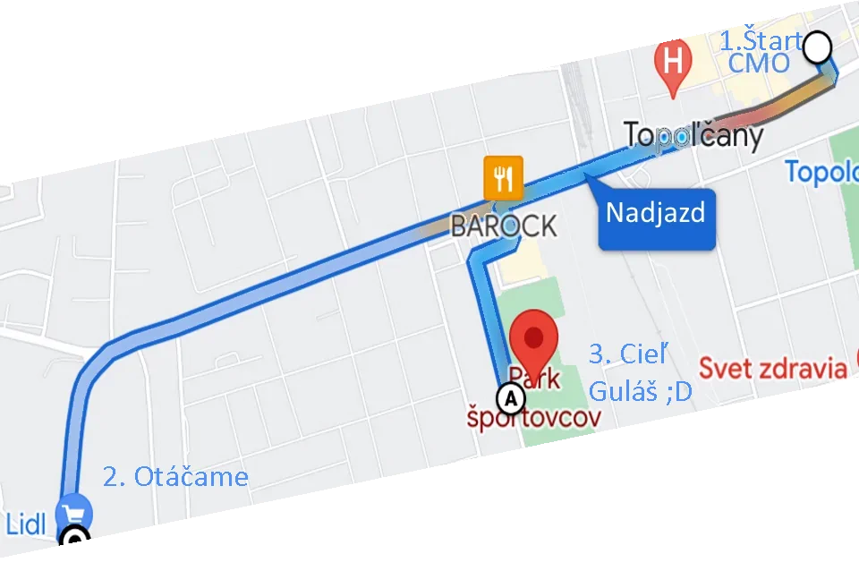

News
Následujuca jazda 24.9 (Čakáme na povolenia) , pre notifikáciu o zmene kliknite dole na odber.
3.9 Naša prvá jazda je úspešne za nami. ľudia boli úžasní a atmosféra za autom s hudbou v party štýle.
Po hrdinskom výkone DTC Teamu 4 dobrovolnikov ktorý nás zachránili, sa musím ešte raz poďakovať pani primátorke a mestu, úžasným pánom policajtom,
, pánovi Bittarovy z Motorboxu, červenému krížu a kultúrato.
Čo určite zlepšíme je hudba a bude viac a častejších páuz
Fotky a videá z akcie nám kľudne pošlite, radi ich pridáme na stránku.
Dokonca 4 korčuliari za autom z hlasnou hudbou dokázali za jazdy tuším aj tancovať.
Ak ste boli na bicykli a chcete si tento super povrch, ale skutočne vychutnať a užívať ako oni.
Tak treba skúsiť určite aj korčule, ale samozrejme po poriadnom naučení sa brzdenia. Kto nezažil netuší o, čo prichádza :)
Topoľčany inline je :
Topolcany inline
- je letná korčuliarska akcia, konajúca sa pravidelne hlavne v Bratislave od roku 2004. A tak po Nitre Piešťanoch Pezinku Trnave Banskej Bystrici Trenčíne Košiciach Slovakia Ringu už pribudnú aj Topoľčany
- je korčuľovanie po mestských cestách každý piatok alebo cez víkend večer počas letných prázdnin
- je zadarmo a bez registrácií
- je za dobrú náladu a radosť zo života ;)
- je pre mladých, starších, rodiny s deťmi, partie … každého, kto vie korčuľovať
- nie je súťaž a nie je na ňu potrebná registrácia
- nie je manifestácia za niečo, niekoho alebo proti niečomu

Pravidlá
Naša akcia má jednoduché pravidlá, ktoré treba dodržiavať. Preto maj na pamäti:
- každý jazdí na vlastnú zodpovednosť
- musíš vedieť rýchlo zabrzdiť, korčuľovať v dave a udržať tempo jazdy
- korčuľuj vpravo a predbiehaj vľavo
- ak si nahodou na bicykli, zaraď sa až za korčuliarov
- počúvaj pokyny polície, zdravotníkov a inline teamu, daj im vždy prednosť v jazde
- pri prekážke alebo brzdení zdvihni ruky nad hlavu
- MaPRka (maximálna povolená rýchlosť) je daná prvým policajným autom, MiPRka (minimálna povolená rýchlosť) je daná posledným policajným autom
- odpadky nehádž na zem, ale do koša, aby naše mestá zostali pekné a čisté
- dodržuj pitný režim, maj pri sebe dostatok tekutín
- fajčenie športovcom nesvedčí, nezapaľuj si cigaretu v dave
- maj pri sebe doklady, budeš ich potrebovať, ak by sa ti niečo stalo, alebo ak vyhráš darček
- bezpečnosť je vždy na prvom mieste - dávaj na seba pozor - nos prilbu a chrániče!

Kedy
- Vybrané piatky v Septembri.
- 16.00 Stretnutie - na mieste štartu Pavla Mudroňa. Hudba. Treba si zobrať topánky zo sebou lebo sa nevraciame
- 17.00 Štart parkovisko ZS. svätého Ladislava, Lipová, mravenisko
- 17.10 Hviezda programu. Prejazd cez nadjazd smer Tovarniky (Ale treba vediet brzit !!!)
- 17.20 Pred Semaforom Lidl Odbojárov čakáme koniec pelotónu a kompaktný sa otáčame vyrážame naspet
- 18.25 Pred nadjazdom však dbočíme na Zimný štadión, nevraciame sa na miesto štartu.
- 18:30 Prijazd do ciela, Parku športovcov. Čaká na nás guláš, tombola a ďalší kultúrny program mesta
Trasa
Jazdíme po cestách, ktoré bežne patria autám s doprovodom štátnej i mestskej polície, zdravotníkov, sanitky a 4-členného inline-teamu. Trasy starostlivo plánujeme s ohľadom na aktuálny stav ciest, rozkopávky a dopravnú situáciu v spolupráci s Políciou a Magistrátom či Miestnym úradom. Trasy sa v Topoľčanoch rozrastú a budú sa striedať.

Akcia sa koná len v prípade dobrého počasia, a dostatočnom počte dobrovoľníkov. Ak Chceš dostávať informácie potvrd odber.
Chceš dlhšie a zaujímavejšie trate?
Na dlhšie trate a teda aj blokovanie viac bočných ulíc pred autami treba viac dobrovoľníkov než momentálne máme (4). Tak neváhaj a pridaj sa :D.
dobrovolnik@topolcany-inline.sk